Transition Case Studies
In addition to creating new apps, you might also want to bring an existing app or piece of software to a new platform or device. In some cases, redesigning an app or website for a new platform or device can be more challenging than starting from scratch. In other cases, you only need to take a few steps to take advantage of the new environment. Whether your transition project is large or small, a good way to prepare for it is to study examples of other products that have made the same transition.
Transitioning Between the Desktop and an iOS Device
As you embark on bringing your software from the desktop to the iOS platform, stay focused on the ways in which people use iOS devices:
People often use iOS devices while they’re on the go, and in environments filled with distractions. Part of your job is to create a responsive, compelling experience that pulls people in, gets them quickly to the content they care about, and maintains focus on that content.
Following what’s known as the 80-20 rule, the largest percentage of users—typically, at least 80 percent—use a limited number of features in an app, while only a small percentage—seldom more than 20 percent—use all the features. Most iOS apps don’t need to provide all the features that only power users need.
From Mail on the Desktop to Mail on iPhone
Mail is one of the most highly visible, well-used, and appreciated apps in OS X. It is also a very powerful program that allows users to create, receive, prioritize, and store email, track action items and events, and create notes and invitations. Mail on the desktop offers this powerful functionality in a couple of windows.
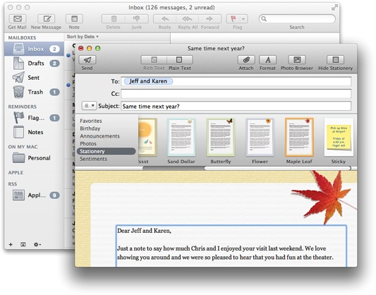
Mail on iPhone focuses on the core functionality of Mail on the desktop, helping people to receive, create, send, and organize their messages. Mail on iPhone delivers this condensed functionality in a UI tailored for the mobile experience that includes:
A streamlined appearance that puts people’s content front and center
Different views designed to facilitate different tasks
An intuitive information structure that scales effortlessly
Powerful editing and organizing tools that are available when they’re needed
Subtle but expressive animation that communicates actions and provides feedback
It’s important to realize that Mail on iPhone isn’t a better app than Mail on the desktop; rather, it’s Mail, redesigned for mobile users. By concentrating on a subset of desktop features and presenting them in an attractively lean UI, Mail on iPhone gives people the core of the Mail experience while they’re mobile.
To adapt the Mail experience to the mobile context, Mail on iPhone innovates the UI in several key ways.
Distinct, highly focused screens. Each screen displays one aspect of the Mail experience: account list, mailbox list, message list, message view, and composition view. Within a screen, people scroll to see the entire contents.
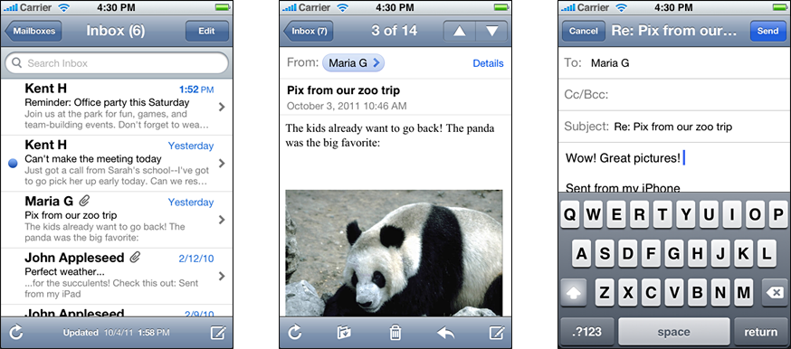
Easy, predictable navigation. Making one tap per screen, people drill down from the general (the list of accounts) to the specific (a message). Each screen displays a title that shows people where they are, and a back button that makes it easy for them to retrace their steps.
Simple, tappable controls, available when needed. Because composing a message and checking for new email are primary actions people might want to take in any context, Mail on iPhone makes them accessible in multiple screens. When people are viewing a message, functions such as reply, move, and trash are available because they act upon a message.

Different types of feedback for different tasks. When people delete a message, it animates into the trash icon. When people send a message, they can see its progress; when the send finishes, they can hear a distinctive sound. By looking at the subtle text in the message list toolbar, people can see at a glance when their mailbox was last updated.
From Keynote on the Desktop to Keynote on iPad
Keynote on the desktop is a powerful, flexible app for creating world-class slide presentations. People love how Keynote combines ease of use with fine-grained control over myriad precise details, such as animations and text attributes.
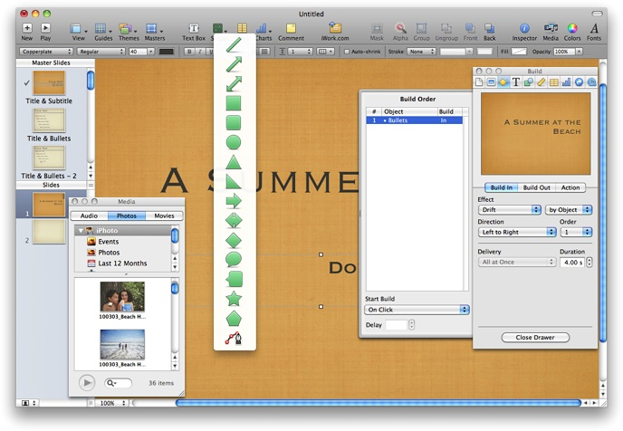
Keynote on iPad captures the essence of Keynote on the desktop, and makes it feel at home on iPad by creating a user experience that:
Focuses on the user’s content
Reduces complexity without diluting capability
Provides shortcuts that empower and delight
Adapts familiar hallmarks of the desktop experience
Provides feedback and communication via eloquent animation
Keynote users instantly understand how to use the app on iPad because it delivers expected functionality using native iPad paradigms. New users easily learn how to use Keynote on iPad because they can directly manipulate their content in simple, natural ways.
The transformation of Keynote from the desktop to iPad is based on myriad modifications and redesigns that range from subtle to profound. These are some of the most visible adaptations:
A streamlined toolbar. Only seven items are in the toolbar, but they give users consistent access to all the functions and tools they need to create their content.
A simplified, prioritized inspector that responds to the user’s focus. The Keynote on iPad inspector automatically contains the tools and attributes people need to modify the selected object. Often, people can make all the modifications they need in the first inspector view. If they need to modify less frequently changed attributes, they can drill down to other inspector views.
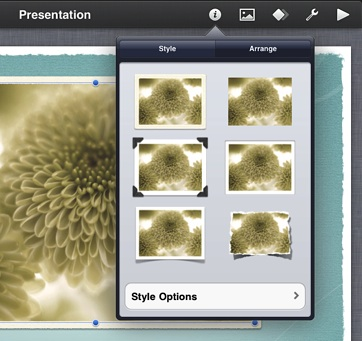
Lots of prebuilt style collections. People can easily change the look and feel of objects such as charts and tables by taking advantage of the prebuilt styles. In addition to color scheme, each collection includes prestyled attributes, such as table headings and axis-division marks, that are designed to coordinate with the overall theme.
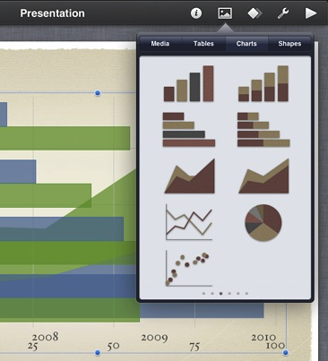
Direct manipulation of content, enriched with meaningful animation. In Keynote on iPad, a user drags a slide to a new position, twists an object to rotate it, and taps an image to select it. The impression of direct manipulation is enhanced by the responsive animations Keynote on iPad performs. For example, a slide pulses gently as users move it and, when they place it in a new location, the surrounding slides ripple outward to make room for it.
From a Desktop Browser to Safari on iOS
Safari on iOS provides a preeminent mobile web-viewing experience on iOS devices. People appreciate the crisp text and sharp images and the ability to adjust their view by rotating the device or pinching and tapping the screen.
Standards-based websites display well on iOS devices. In particular, websites that detect the device and do not use plug-ins look great on both iPhone and iPad with little, if any, modification.
In addition, the most successful websites typically:
Set the viewport appropriately for the device, if the page width needs to match the device width
Avoid CSS fixed positioning, so that content does not move offscreen when users zoom or pan the page
Enable a touch-based UI that does not rely on pointer-based interactions
Sometimes, other modifications can be appropriate. For example, web apps always set the viewport width appropriately and often hide the UI of Safari on iOS. To learn more about how to make these modifications, see “Configuring the Viewport” and “Configuring Web Applications” in Safari Web Content Guide.
Websites adapt the desktop web experience to Safari on iOS in other ways, too:
Using custom CSS to provide adaptable UI. Different UI elements can be suitable for different environments. For example, the Apple website includes a page that displays movie trailers users can watch. When viewed in Safari on the desktop, users can click the numbers or the previous and next controls to see additional trailers:
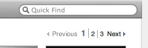
When viewed on iPhone, the next, previous, and number controls are replaced by prominent, easy-to-use buttons with symbols that echo the style of built-in controls (such as the detail disclosure indicator and the page indicator):
Accommodating the keyboard in Safari on iOS. When a keyboard and the form assistant are visible, Safari on iPhone displays your webpage in the area below the URL text field and above the keyboard and form assistant.
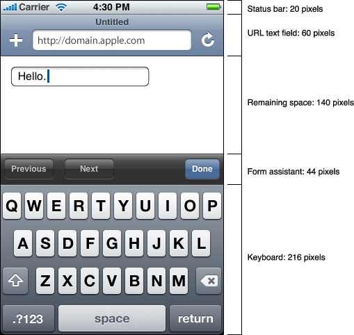
When a keyboard and the form assistant are not displayed, there is an additional 216 pixels of vertical space available (in portrait orientation) for the display of your webpage. In landscape orientation, two of the values differ: The keyboard height is 162 pixels, and the form assistant height is 32 pixels.
Accommodating the pop-up menu control in Safari on iOS. In Safari on the desktop, a pop-up menu that contains a large number of items displays as it does in an OS X app; that is, the menu opens to display all items, extending past the window boundaries, if necessary. In Safari on iOS, a pop-up menu is displayed using native elements, which provides a much better user experience. For example, on iPhone, the pop-up menu appears in a picker, a list of choices from which the user can pick, as shown below.
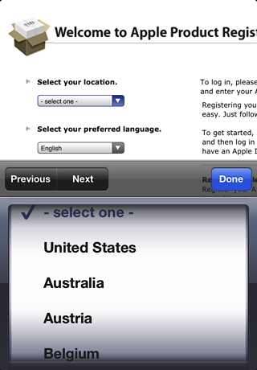
On iPad, the pop-up menu displays in a popover, as shown below.
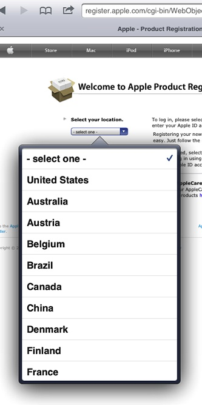
Using lists to display data in iPhone web apps. iOS users are accustomed to lists in native apps, so when they see lists in web apps, they’re more likely to think that the web content is an app. On iPhone, lists appear edge to edge or inside rounded rectangles. Each style is defined by its own metrics.
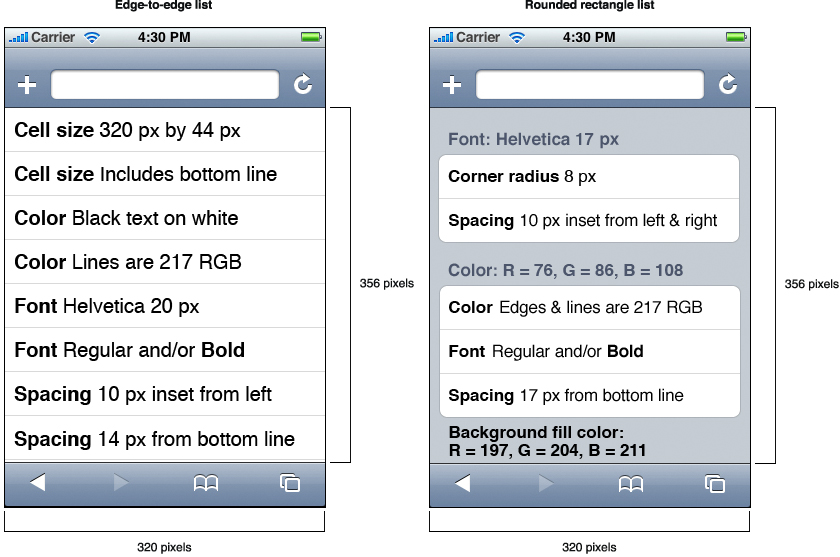
Transitioning Between iOS Devices
People appreciate having their apps run on all their iOS devices. As much as possible, ensure that each version of your app takes advantage of the characteristics of each device.
From Mail on iPhone to Mail on iPad
Mail is one of the premier built-in apps on iPhone. People appreciate the clear, streamlined way it organizes large amounts of information in a series of easy-to-use screens.
Mail on iPad delivers the same core functionality. At the same time it provides more onscreen space for people’s messages, meaningful touches of realism, and powerful organizing and editing tools that are always accessible but not obtrusive. The visual stability of a single, uncluttered screen provides what users need in one place, with minimal context changes.
The differences between Mail on iPhone and Mail on iPad reflect the different user experiences of each device.
Mail on iPhone is designed to help mobile users handle their email while they’re standing in line or walking to a meeting.
Mail on iPad is efficient enough for people to use on the go, but its rich experience also encourages more in-depth use.
Even though Mail on iPad tailors the user experience to the device, it does not alter the core functionality people are used to, or gratuitously change the location or effect of individual functions. iPhone Mail users easily recognize the toolbar items and mailbox structure in iPad Mail, and immediately know how to use them because they’re virtually identical.
To enhance the mobile email experience, Mail on iPad evolves the iPhone Mail UI in a number of important ways:
Expanded support for device orientations. People can use Mail on iPad in any of the four orientations (landscape shown here). Although the landscape layout differs somewhat from the portrait layout, the focus remains on the content and functionality people care about.
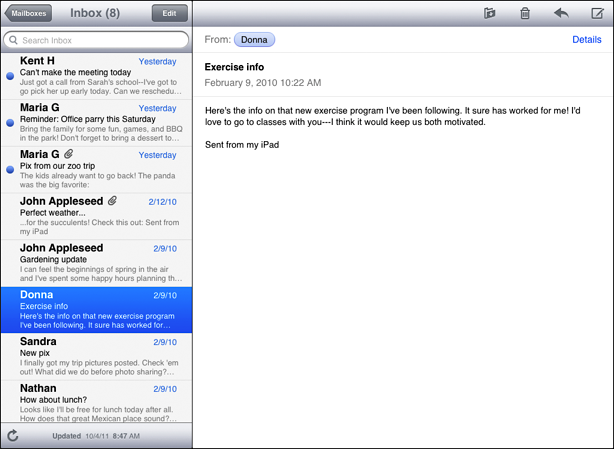
Increased focus on message content. Mail on iPad reserves most of the screen for the current message in all orientations (portrait shown in the following figure). This includes moving the toolbar to the top of the message view to increase the vertical space available for the message content. With the extra space, people can read longer messages with less scrolling. And when people want to view the message list in portrait, they can still see a large portion of the current message.
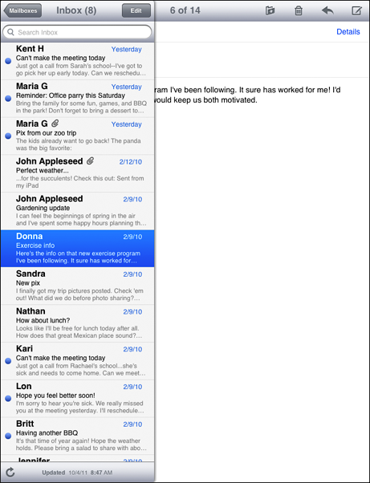
A flatter hierarchy. Mail on iPad effectively flattens the Mail hierarchy (that is, account > mailbox > message list > message) by confining all levels above the message itself to a separate UI element. In landscape, these levels are persistently visible in the left pane of a split view; in portrait, users can view these levels by revealing an element that hovers over part of the main screen.
Drastically reduced full-screen transitions. Because most of the hierarchy is available in a separate onscreen element, people can access most of what they need in a single screen. When people drill down through the hierarchy, it’s the account > mailbox > message list view that transitions, not the entire screen.
Realistic messages. When people mark a message for deletion, it slides onto the message view like a physical sheet of paper. As they choose additional messages to delete, the messages form a realistic stack of papers, complete with slightly untidy edges.
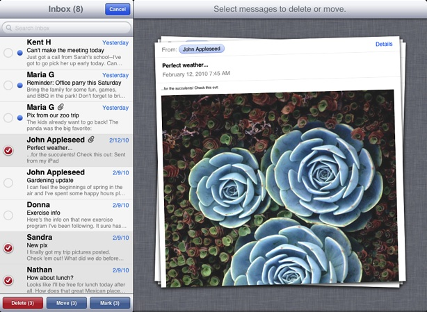
Running on iPhone 5
You don’t have to redesign your app for it to look good on iPhone 5. Many apps look good simply by displaying more of their existing UI; others might need to stretch content or background regions. Only some apps—such as games or apps that display lots of custom artwork—are likely to need some additional work to look their best.
The iPhone 5 display is 176 pixels taller than the display of other iPhone and iPod touch devices. In portrait orientation, the extra height is about the same as the height of two additional rows in a standard table view. For example, Messages running on iPhone 5 (shown below on the right) displays a taller conversation area than does Messages running on iPhone 4S (shown below on the left).
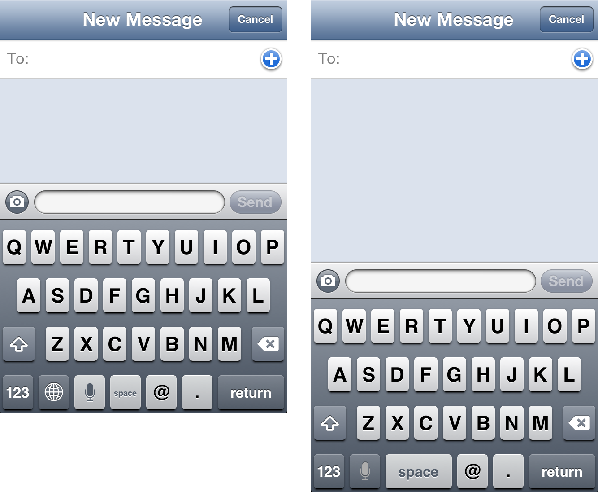
Of course, the additional 176 pixels in height translates into additional lateral space when the device is in landscape orientation. For example, in Messages on iPhone 5 (shown here below Messages on iPhone 4S), the UI stretches to fill the additional width.
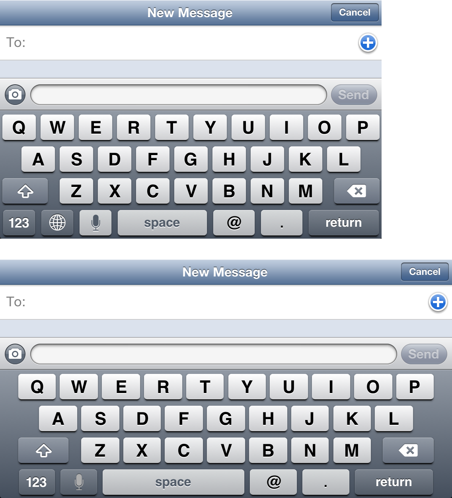
The Messages screens shown above illustrate a crucial point: The minor UI adjustments that were made to accommodate the iPhone 5 display do not change the app’s functionality in any way. The consistency of the user experience—which is evident in all of the apps described in this section—follows a key design principle of iPhone 5: The larger device display enables users to see more of the content they care about; it does not provide an opportunity to squeeze in more app functionality.
Because you won’t be changing the functionality of your app, there’s typically very little you have to do to make your app look great on iPhone 5. If you use Auto Layout to design your app’s UI, you might have even less work to do. The following guidelines can help you decide which UI changes are best suited to your app.
Allow more content to be revealed automatically. If some of your UI is currently hidden below the bottom edge of the screen—requiring users to scroll—you don’t have to make any changes to allow the increased display height of iPhone 5 to reveal more of your UI. In Settings, for example, users see additional table rows on iPhone 5 (shown below, on the right) than they do on iPhone 4S (shown below, on the left).
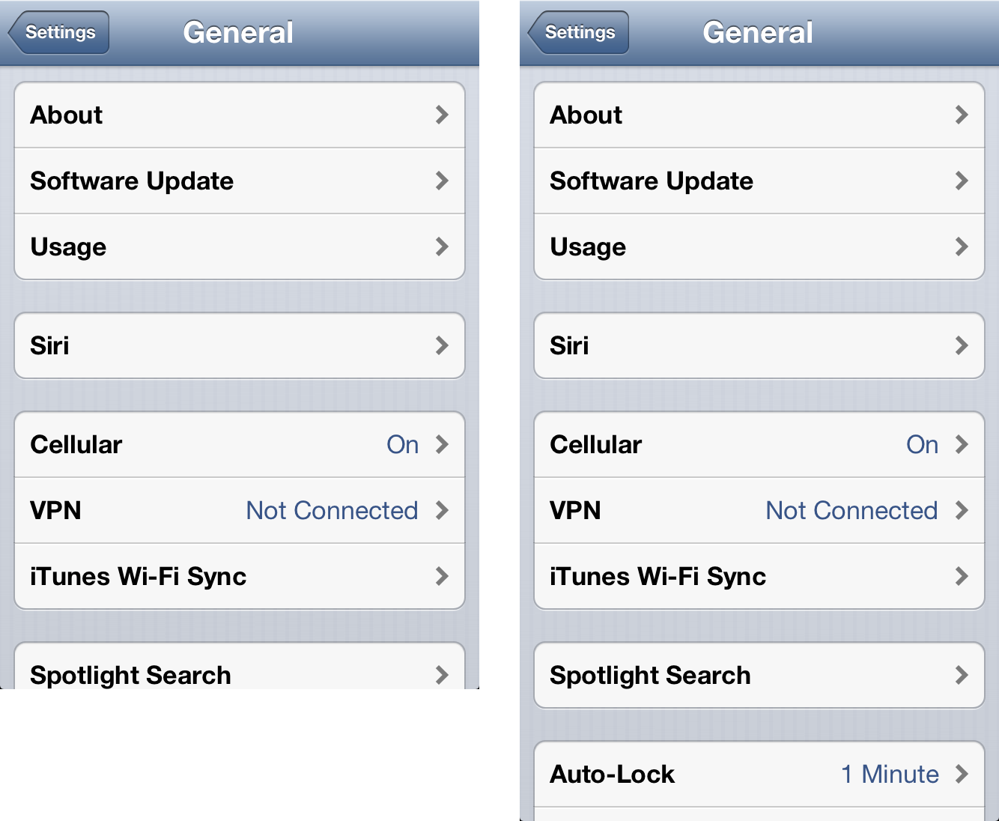
Stretch content regions. If you display content in a view, consider vertically expanding the view to show some additional content or to insert more space within the view. For example, users have a larger message body region in Mail on iPhone 5 (shown below, on the right) than they do in Mail on iPhone 4S (shown below, on the left).
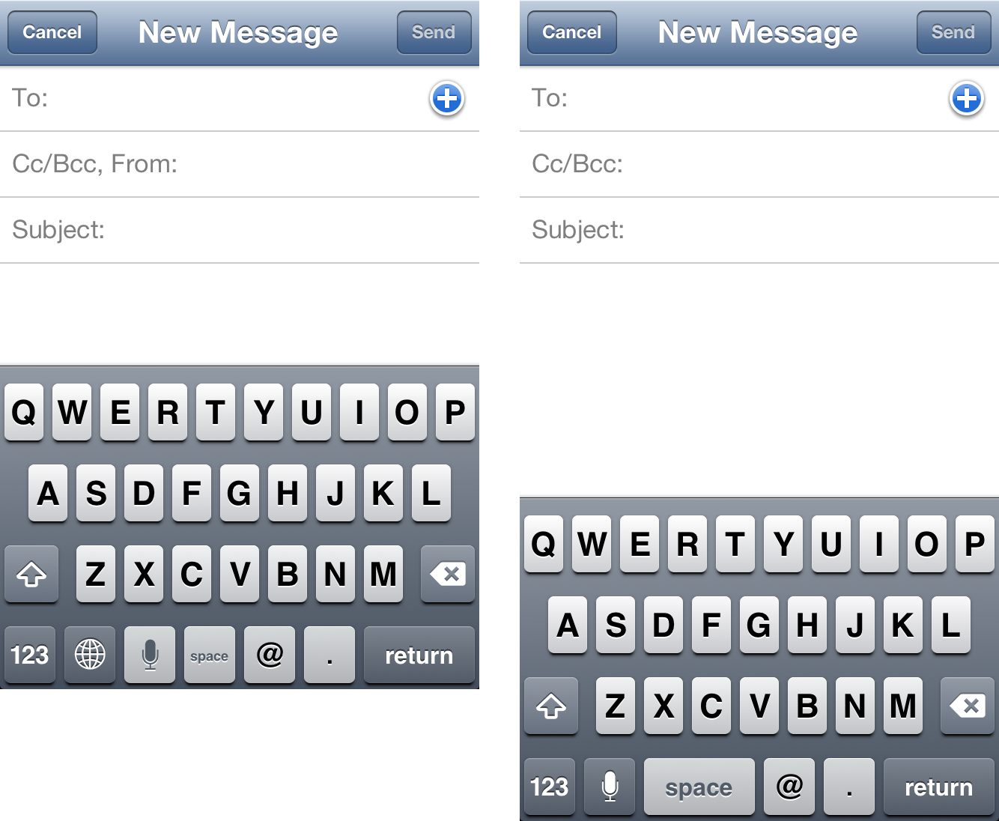
Stretch background areas between content regions. You can make your layout look a bit more relaxed by expanding the vertical space between content views. For example, Game Center on iPhone 5 (shown below, on the right) shows more of the background between the main content regions than does Game Center on iPhone 4S (shown below, on the left).
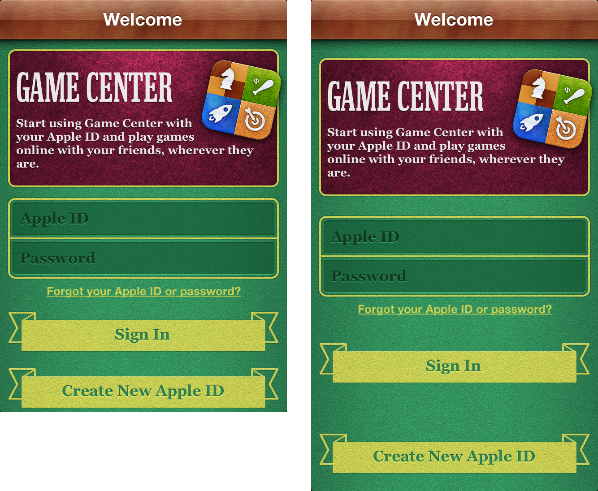
If necessary, recenter dominant visual elements. After adjusting backgrounds or views to accommodate the additional space, you might want to make sure that principal elements of your UI are still centered appropriately. One way to do this is to first stretch a region near the top of the screen and then adjust the centering of the elements. For example, Compass on iPhone 5 (shown below, on the right) maintains the user’s focus on the compass and heading by keeping these elements centered on the extended background.
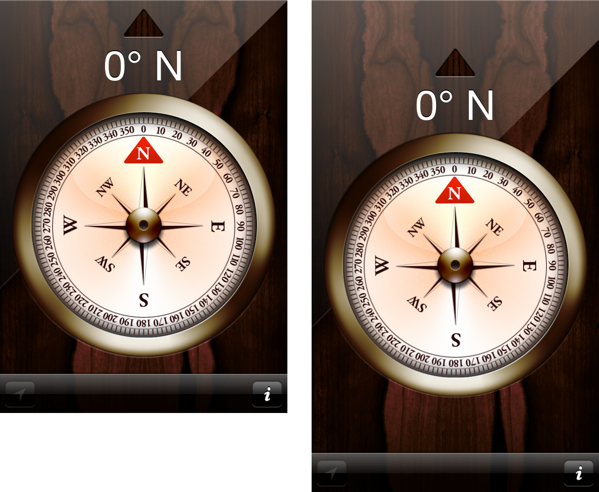
Expand custom artwork, but don’t put essential details in the new areas. If your app contains mostly custom UI—such as in a game—you should use the extra space to give users more artwork to enjoy. It’s not appropriate to put app-critical functionality or details in these additional areas, because not all users will see them. For example, users see more of the microphone stand in Voice Memos on iPhone 5 (shown below, on the right) than they do in Voice Memos on iPhone 4S (shown below, on the left).
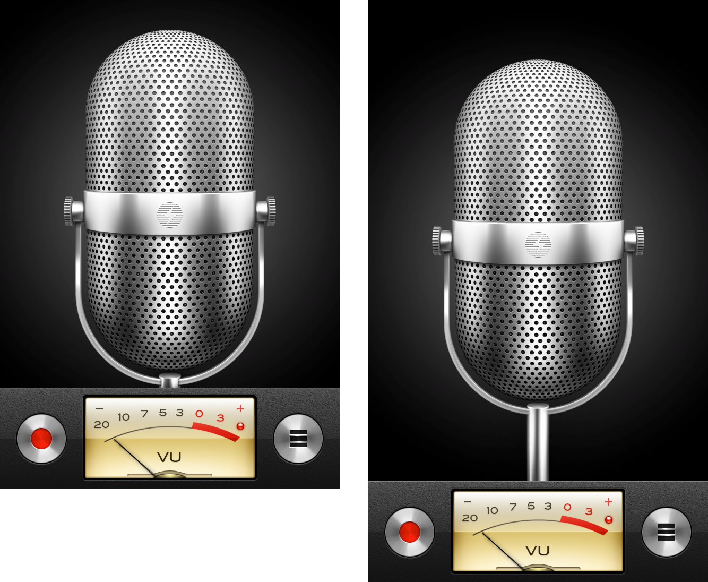
In general, avoid increasing control sizes. If you use the minimum tappable size for controls in your app—that is, no smaller than 44 x 44 points—you should not need to adjust them for iPhone 5. However, you might choose to add a little more space between existing controls.
Don’t use the extra space to display an additional bar or banner. People expect to see more content on iPhone 5. To avoid disappointing your users, resist the temptation to use the extra vertical space for a custom button bar or banner.
© 2013 Apple Inc. All Rights Reserved. (Last updated: 2013-05-01)
Copyright © 2013 Apple Inc. All Rights Reserved. Terms of Use | Privacy Policy | Updated: 2013-05-01